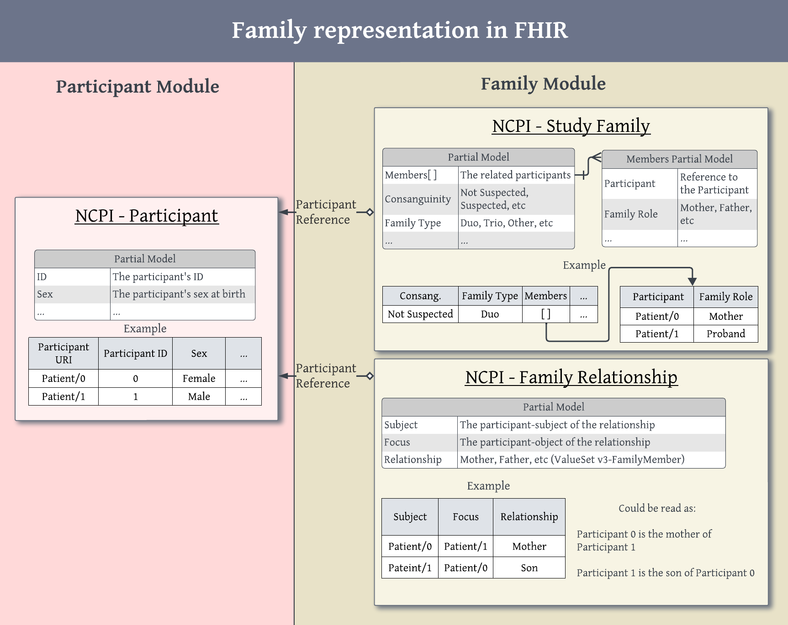
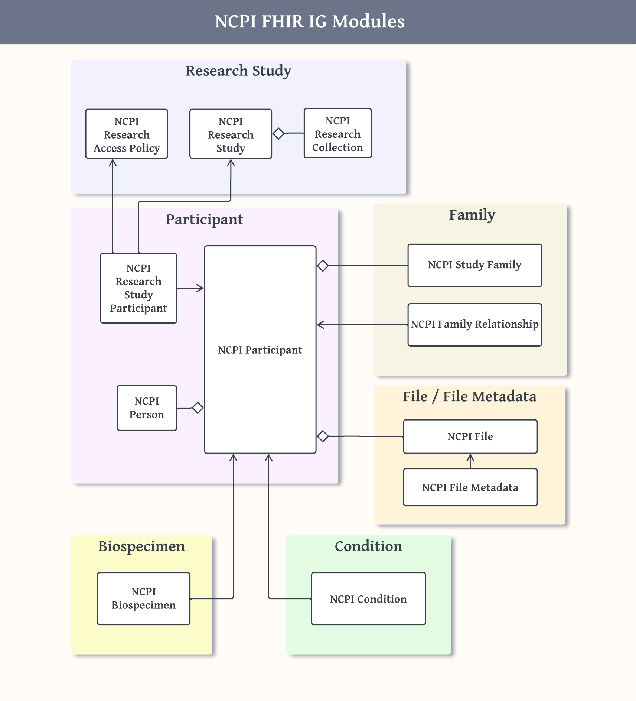
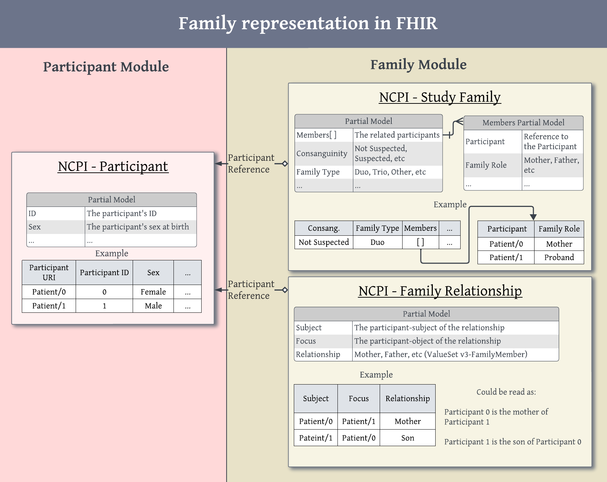
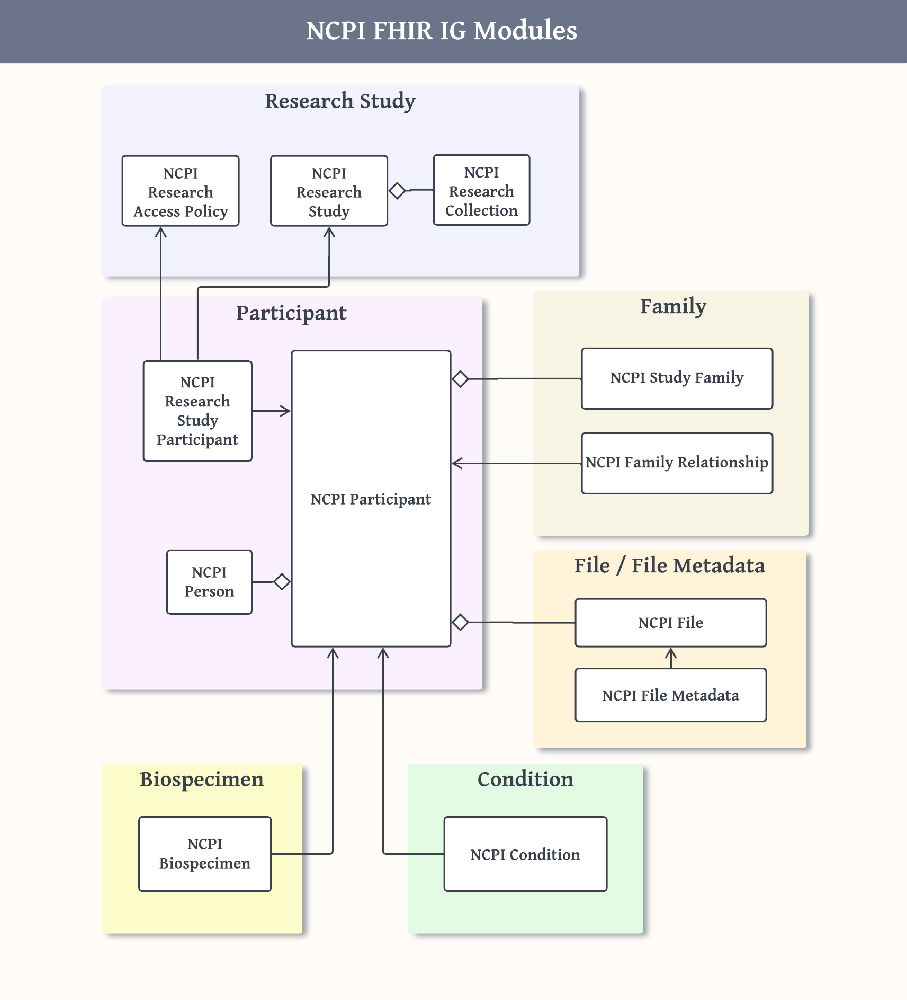

http://edamontology.org
http://purl.obolibrary.org/obo/ncit.owl
https://loinc.org
https://nih-ncpi.github.io/ncpi-fhir-ig-2/CodeSystem/assay-strategy-cs
https://nih-ncpi.github.io/ncpi-fhir-ig-2/CodeSystem/collection-type
https://nih-ncpi.github.io/ncpi-fhir-ig-2/CodeSystem/condition-type
https://nih-ncpi.github.io/ncpi-fhir-ig-2/CodeSystem/metadata-elements
https://nih-ncpi.github.io/ncpi-fhir-ig-2/CodeSystem/ncpi
https://nih-ncpi.github.io/ncpi-fhir-ig-2/CodeSystem/ncpi-family-types
https://nih-ncpi.github.io/ncpi-fhir-ig-2/CodeSystem/phenotypic-feature-assertion
https://nih-ncpi.github.io/ncpi-fhir-ig-2/CodeSystem/research-data-access-code
https://nih-ncpi.github.io/ncpi-fhir-ig-2/CodeSystem/research-data-access-type
https://nih-ncpi.github.io/ncpi-fhir-ig-2/CodeSystem/research-data-date-of-birth-method
This fragment is not visible to the reader
This publication includes IP covered under the following statements.
| Type | Reference | Content |
|---|---|---|
| web | redcap.chop.edu | Research Web Link : https://redcap.chop.edu/surveys/?s=A7M873HMN8 |
| web | kidsfirstdrc.org | Research Web Link : https://kidsfirstdrc.org/portal/portal-features/#dataAccess |
| web | cbtn.org | https://cbtn.org/ |
| web | cbtn.org | https://cbtn.org/publications |
| web | snomed.info | 428263003 |
| web | snomed.info | 415684004 |
| web | snomed.info | 410515003 |
| web | snomed.info | 261665006 |
| web | example.org |
IG © 2023+ NCPI FHIR Working Group
. Package ncpi-fhir-implementation-guide-v2#0.2.0 based on FHIR 4.0.1
. Generated 2025-07-22
Links: Table of Contents | QA Report |
| web | github.com | FHIR 101 is a tutorial inside a Jupyter notebook that was put together by some folks at the Kids First Resource Center. |
| web | fhir-drills.github.io | FHIR Drills |
| web | edamontology.org | format and relatedFile.type should use EDAM terminology (i.e., codes) when available. Other file type code systems are allowed if a suitable EDAM code does not exist. |
| web | snomed.info | 428263003 |
| web | snomed.info | 415684004 |
| web | snomed.info | 410515003 |
| web | snomed.info | 261665006 |
| web | github.com | calkinsh |
| web | github.com | RobertJCarroll |
| web | github.com | JamedFV |
| web | github.com | brendagutman |
| web | github.com | ShahimEssaid |
| web | github.com | allisonheath |
| web | github.com | a-l-holmes |
| web | github.com | fiendish |
| web | github.com | liberaliscomputing |
| web | github.com | nicholasvk |
| web | github.com | znatty22 |
| web | github.com | torstees |
| web | github.com | bwalsh |
| web | github.com | aw3334 |
| web | fshschool.org | FSH School - This is a great resource for both reference and introductory material |
| web | fshschool.org | Sushi Tutoria - Walkthrough guide for creating a sushi project, creating a handful of profiles using sushi and building a formal IG website on your local system. |
| web | en.wikipedia.org | Variant of Camel case where the first letter of the string is always upper case |
| web | fshschool.org | Filenames of all kinds should contain no whitespace. There are rules determining how we must name content that gets merged into the various artifact pages which is described over at fshschool.org toward the bottom of that page. In order to clearly differentiate between these artifact components and the text narrative pages, those stand-alone narrative pages must exist in files named using snake case . |
| web | en.wikipedia.org | Filenames of all kinds should contain no whitespace. There are rules determining how we must name content that gets merged into the various artifact pages which is described over at fshschool.org toward the bottom of that page. In order to clearly differentiate between these artifact components and the text narrative pages, those stand-alone narrative pages must exist in files named using snake case . |
| web | en.wikipedia.org | Sushi will parse the filename and apply title case to construct a meaningful starting header and title. For titles where that doesn't work, such as fhir_basics which would incorrectly result in a title, Fhir Basics , contributors should add an appropriate entry to the sushi-config pages heading as can be seen in this example configuration . By assigning the title property for a given page, the contributor can provide any type of case as is appropriate. |
| web | fshschool.org | Sushi will parse the filename and apply title case to construct a meaningful starting header and title. For titles where that doesn't work, such as fhir_basics which would incorrectly result in a title, Fhir Basics , contributors should add an appropriate entry to the sushi-config pages heading as can be seen in this example configuration . By assigning the title property for a given page, the contributor can provide any type of case as is appropriate. |
| web | github.com | The FSH code for the CBTN example can be found in the NCPI FHIR IG 2 repository at ncpi-fhir-ig-2/input/fsh/examples or with this direct link . |
| web | github.com | The FSH code for the GREGoR example can be found in the NCPI FHIR IG 2 repository at ncpi-fhir-ig-2/input/fsh/examples/GREGoR_example.fsh or with this direct link . |
| web | ga4gh.github.io | We are aware of the work done by GA4GH to model family health history and family relationships via the Pedigree IG , including their development of the KIN ontology . We are engaging to ensure compatibility and meeting needs our family, family relationship, and family history modeling with the efforts of the Pedigree IG while still supporting the needs of the NCPI partner groups. |
| web | github.com | We are aware of the work done by GA4GH to model family health history and family relationships via the Pedigree IG , including their development of the KIN ontology . We are engaging to ensure compatibility and meeting needs our family, family relationship, and family history modeling with the efforts of the Pedigree IG while still supporting the needs of the NCPI partner groups. |
|
ncpi_family_module_relationships.png  |
|
ncpi_modules_relationship_overview.png  |
|
ncpi_phenotype_condition_module.png
|
|
research-study-structure.png
|
|
tree-filter.png
|